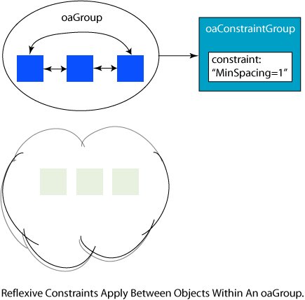
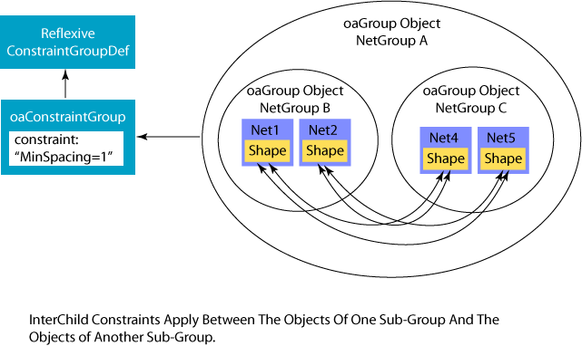

|
 |
 |
||||||
|
|
|
||||||
A design typically has a number of conditions that must be met in order for the design to be correct. Many applications refer to these as rules, but OpenAccess uses the more generic term, constraints. Constraints can include technology constraints, such as minimum width or maximum current density for a wire. These types of constraints are likely to be provided by a foundry.
OpenAccess provides constraint-related classes that you can use to specify and apply these constraints. A number of specific constraints are built into OpenAccess. These address technology and foundry limitations. Applications can create their own constraints and use the same mechanisms to apply them to designs.
OpenAccess provides a flexible infrastructure for constraints that
In order to implement this functionality, OpenAccess provides
This document includes the following topics:
Applying Constraints to Objects
Using Constraint Group Definitions
Using Taper Constraint Group Definitions
Understanding TransReflexive, Reflexive, and InterChild Constraint Groups
TransReflexive Constraint Group Semantics
Reflexive Constraint Group Semantics
InterChild Constraint Group Semantics
User Defined Constraint Group Definitions
Combining Constraints in Constraint Groups
Precedence Type Constraint Group Operator
AND Type Constraint Group Operator
OR Type Constraint Group Operator
Determining Which Constraint Groups Apply to Objects
OpenAccess has multiple constraint classes that handle the various representations of constraints. oaConstraint, which is the base class for these constraint representations, has four derived classes:
Layer, layer pair, and layer array constraints can refer to oaPhysicalLayer , oaDerivedLayer, or oaSizedLayer objects.
Constraints have attributes that depend on the type of constraint and its application. These are:
The constraint definition is represented by the oaConstraintDef object or one of its derived classes:
The definition specifies the allowed value types for the constraint, the objects to which the constraint can be applied, and the databases in which the constraint can be created.
OpenAccess provides several predefined constraint definitions, including definitions for common process rules such as minimum width and minimum spacing. Built-in constraint definitions are accessed using the get() functions on the derived objects oaSimpleConstraintDef, oaLayerConstraintDef, oaLayerPairConstraintDef, and oaLayerArrayConstraintDef.
If you need a constraint type not defined by OpenAccess, you can create a new definition using the create() function on the appropriate derived oaConstraintDef object, for example, oaLayerConstraintDef::create.
The value of the constraint is represented by an oaValue object. OpenAccess provides many different value types, including both simple types and tables. When a constraint is created, the type of the value must match one of the allowed value types in the constraint definition. Constraint definitions might have several allowed value types. For example, consider minimum spacing, which might have any of the following value types:
By default, constraints are hard, which means that they must be met. Set the isHard attribute to false to remove this restriction.
You can set constraint parameters to specify additional qualifiers for applying the constraint. An example of this is the minimum adjacent via spacing constraint. This constraint has a distance constraint parameter, which indicates that this constraint applies only if the adjacent via is within the specified distance to the object.
Layer-specific constraints can be scoped by purpose, which means that the constraint only applies to those shapes on a layer that have the specified purpose.
You can apply constraints to oaObjects by adding the constraint to the oaObject's constraint group. Each oaObject has an associated constraint group that you can retrieve with the oaObject::getConstraintGroup() function. You can use oaObject::hasConstraintGroup() to determine if an object has associated constraints. Once you have a constraint group, which can be the result of getting an object's constraint group or creating your own, you can add constraints to the group with the oaConstraintGroupMem::create function.
Constraint group semantics are defined through an association with an oaConstraintGroupDef. The oaConstraintGroupDef determines the type of objects that the constraint group can be applied to. Additional information about using constraint group definitions is provided in the following section Using Constraint Group Definitions.
The oaConstraintGroupOperator on a constraint group determines how the member constraints apply to an object. The order of constraint group members is important if the associated constraint group definition has the precedence oaConstraintGroupOperator defined. Constraint groups associated with a precedence type definition apply a member constraint according to that member's precedence or order among similarly defined constraints in the group. You can change the order of the constraint group members with the moveToFirst() and moveAfter() functions available on oaConstraintGroupMem. You can remove constraint group members with the destroy() function. The AND constraint group operator means that all constraints in the group apply to the associated objects. The OR constraint group operator means that the associated object must satisfy at least one of the constraints in the group regardless of order. Additional information about using operators on constraint groups is provided in the following section Combining Constraints in Constraint Groups.
oaTech, oaDesign, oaBlock, oaModule, oaNet, oaRoute, oaGroup, oaFigGroup, and oaAreaBoundary have a second set of built-in constraint groups called default constraint groups. Adding constraints to one of these container objects implies that the constraint applies to all the objects in that container. For example, adding a constraint to a block's default constraint group implies that the constraint applies to all of the objects in the block. Adding constraints to the default constraint group of an oaNet implies that the constraints apply to all the shapes and routes on that net. To apply a constraint to only a route (as opposed to the entire net), add the constraint to the default constraint group of that route.
You can retrieve the default constraint groups with the appropriate getDefaultConstraintGroup() function, for example, oaDesign::getDefaultConstraintGroup. You can use the appropriate hasDefaultConstraintGroup() function to determine whether or not there is a default constraint group for the object.
Object type limitations specified by a constraint definition only apply when constraints are added directly to a container's implicit constraint group. Any constraint can be added to a default constraint group on a container object such as a design, and no checking is performed. These constraints apply to all contained objects.
Additionally, oaTech provides a foundry rules constraint group, which is intended to hold the manufacturing constraints for a particular technology. These constraints apply to all objects built with this technology. Any constraint can be added to the foundry constraint group on the tech, and no checking is performed. Both default constraint groups and foundry rules constraint groups may contain constraints that are not applicable to a particular object type based on the associated constraint definition.
All these constraint groups (object constraint groups, default constraint groups, foundry constraint groups, and tech default constraint groups) are known as built-in constraint groups in OpenAccess.
To enforce certain foundry rules, such as gate widths, it is not sufficient to associate constraints with drawn layers. Therefore, some applications define layers that are derived from drawn layers, and then associate the constraints with the derived layers. For more information on derived layers, see Deriving Layers and Performing Layer Operations
A constraint group definition specifies the semantics for how constraints in the corresponding constraint groups are used. OpenAccess provides a number of built-in constraint group definitions for commonly used types of constraint groups. The built-in constraint group types are:
These built-in constraint group definitions are specified using an oaConstraintGroupType enumeration.
| oaConstraintGroupTypeEnum | Description | Objects |
|---|---|---|
| oaImplicit | Specifies the semantics for the built-in constraint group associated with individual objects. | All objects. Applies between the associated object and all other relevant objects. |
| oaDefault | Specifies the semantics for the built-in constraint group associated with a container object. Constraints in these constraint groups apply to the contained objects but not to the container object. | oaTech, oaDesign, oaBlock, oaModule, oaNet, oaRoute, oaGroup, oaFigGroup, oaBoundary |
| oaFoundry | Specifies the semantics for the built-in foundry constraint group associated with an oaTech database. A technology database can have only one foundry constraint group. | oaTech |
| oaTaper | Specifies the semantics for the built-in taper constraint group. | oaInstTerm, oaPin, oaBitTerm |
| oaInputTaper | Specifies the semantics for the built-in input taper constraint group. | oaBitNet |
| oaOutputTaper | Specifies the semantics for the built-in output taper constraint group. | oaBitNet |
| oaShielding | Specifies the semantics for the built-in constraint group associated with a shielded oaBitNet. The shielding constraint group can also be associated with a group of nets that must be shielded. | oaBitNet |
| oaTransReflexive | Specifies the semantics for constraint groups where the constraints apply between all objects within a container and all relevant objects outside of that container. The constraints do not apply between objects within the container. | oaGroup |
| oaReflexive | Specifies the semantics for constraint groups where the constraints apply between the relevant objects within a container, but do not apply to objects outside of the container. | oaGroup |
| oaInterchild | Specifies the semantics for constraint groups where the constraints apply between objects within child containers but do not apply between objects within the parent container. InterChild constraint groups can be considered as applying to a subset of the relationships defined by the Reflexive semantics. | oaGroup |
| oaUserDefined | Collects all user named constraint groups that are associated with a database but not associated with a particular object. User defined constraint groups in older databases are upgraded to be associated with this constraint group definition. | oaTech, oaDesign |
The three built-in taper constraint group types are oaTaper, oaInputTaper, and oaOutputTaper. The oaInputTaper and oaOutputTaper types can be associated with oaBitNet objects, where the oaTaper type supports the oaInstTerm, oaPin, and oaBitTerm objects. If an oaInputTaper constraint group is associated with an oaBitNet object, the constraints in that constraint group apply to the input oaTerms of that oaBitNet object. Similarly, if an oaOutputTaper constraint group is associated with an oaBitNet object, the constraints in that constraint group apply to the output oaTerms of that oaBitNet object.
If an oaTaper type of constraint group is associated with an oaInstTerm or oaBitTerm object, the contained constraints are applied when wiring the geometries that correspond to the pin that is either associated with the term or associated with the term corresponding to the instTerm. The application wires the net that is associated with the term or with the instTerm. The precedence for evaluating objects associated with an oaTaper constraint group is to evaluate first the oaInstTerms, then oaPins, and last oaBitTerms. The constraints in these groups can apply to objects that do not exist yet. The oacTaperHalo constraint may be added to a constraint group associated with any of these definitions to define the window around an object within which the taper must occur.
The general steps for using a taper constraint group are:
These types of constraint groups, and the corresponding constraint group definitions, are intended to apply to objects within oaGroup containers. These types of constraint groups provide more flexibility and a greater degree of control for applying constraints.
TransReflexive constraints apply between each object within a container and all objects outside of the container. For example, it is often necessary to apply constraints between a differential net pair and other nets in order to minimize noise on the differential pair. The oaTransReflexive constraint group semantics are intended for this type of application. The following figure illustrates the semantics.

The constraints apply between each object in the container object and each object outside the container object. The constraints do not apply between the objects within the container object, nor do the constraints apply between the objects outside of the container. Further, if a container object includes other container objects, the constraints apply between the sub-container objects and those objects outside of the parent container, but the constraints do not apply between objects within the sub-containers nor between objects in the sub-containers and other sub-containers or objects in the parent container. The following figure illustrates how the constraints apply.

Reflexive constraints apply between the objects within a container. For example, it is often necessary to apply constraints between a differential net pair that are different from the constraints necessary between the differential net pair and other nets. The oaReflexive constraint group semantics are intended for this type of application. The following figure illustrates the semantics.
The constraints apply only between the objects within the container and do not apply between objects within the container and objects outside of the container.
The InterChild constraint group semantics are a variant of the Reflexive constraint group semantics. Constraints in an InterChild constraint group apply between the relevant objects in a sub-group and all objects in other sub-groups. If InterChild constraints are applied to an oaGroup that has no sub-groups, the semantics for applying the constraints are identical to the semantics for Reflexive constraint groups. The following figure illustrates the semantics for InterChild constraint groups.
You can create a user-defined constraint group definition by using the oaConstraintGroupDef::create() function. User-defined constraint group definitions can also be destroyed, and notifications are issued both when user-defined constraints are created and when they are destroyed.
When you create a user-defined constraint group definition, you supply a name and a list of one or more managed objects that the constraint groups apply to. The oaConstraintGroupDef object exists in a session, and you can get the collection of these objects that are defined in a session by using oaSession::getConstraintGroupDefs().
The lef2oa reference translator included with OpenAccess creates a LEFDefaultRouteSpec constraint group and a LEFSpecialRouteSpec constraint group with corresponding user-defined group definitions. By definition, only one of each of these constraint groups can be associated in a technology database, but each tech in a graph of techs can have its own set of these constraint groups. In addition, a design can have its own LEFDefaultRouteSpec and LEFSpecialRouteSpec constraint group.
You can get all the constraint groups, for a given oaConstraintGroupDef, in a graph of techs by using the oaTech::getConstraintGroups() function to return an ordered array of constraint groups associated with the definition. The first constraint group in the ordered array is the constraint group associated with the most derived tech database in the graph.
There are two user-defined ConstraintGroups that are created by the OpenAccess LEF and DEF translators:
These specialized ConstraintGroups are created with an oaConstraintGroupDef. It is recommended that applications access the oaConstraintGroupDef in order to get the corresponding ConstraintGroup.
The specialized ConstraintGroups can be stored in tech or design databases. If stored in a tech database, the constraints apply across any designs that are associated with that tech. If stored in the design database, the constraints apply only to that particular design. Design-specific constraints should take precedence over constraints in the technology database. For example, suppose the LEFDefaultRouteSpec for a tech contains an oacValidRoutingVias constraint that specifies the list of via definitions and geometries that can be used by the application when routing the design. At some point, a digital router processing the design generates the set of via definitions and geometries that it used. This design-specific set of valid routing vias takes precedence over the more general list specified in the tech. Applications must look for design-specific routing rules before looking in the tech for the more generally applied rules.
A single tech can have only one LEFDefaultRouteSpec and one LEFSpecialRouteSpec. However, an application can have multiple LEFDefaultRouteSpecs and multiple LEFSpecialRouteSpecs in a graph of referenced technology databases. An application creates overriding constraints in the more derived tech. Consider the following example.
For example, the following figure shows one of the LEFDefaultRouteSpec constraint groups named LEFDefaultRouteSpec. However, the other ones cannot be named the same. Lef2oa generates a unique name if necessary. The ConstraintGroup name in a tech must be unique among all the techs in a graph.
There are three LEFDefaultRouteSpecs in the graph of techs for the design. An application searching for constraints uses the following function to return an ordered set of ConstraintGroups with the most derived ConstraintGroup first.
oaCollection<oaConstraintGroup, oaTech> oaTech::getConstraintGroups(const oaConstraintGroupDef *def,
oaUInt4 filterFlags = oacTechConstraintGroupIterAll) const
The application can then search for a particular constraint, searching first in Tech A, then Tech B, and finally, Tech C. If the constraint of interest is constraint 2, the application will find this in Tech B. If the constraint of interest is constraint 1, the application will find this in Tech A.
Note: A design-specific LEFDefaultRouteSpec or LEFSpecialRouteSpec need not be complete—rather, it can supply a subset of constraints as overrides to constraints specified in the technology database.
For information about how the LEF and DEF translators map constructs into the LEFDefaultRouteSpec or LEFSpecialRouteSpec, refer to the LEF/DEF to OpenAccess Mapping.
Databases using dataModel 3 or earlier are upgraded when read by applications based on dataModel 4 or later. Constraint groups are associated with one of the built-in constraint groups and their corresponding constraint group definitions. When reading older databases, that do not support constraint group definitions, into an application that uses dataModel 4 or later, implicit constraint groups on objects are associated with the oaImplicit constraint group definition. Default constraint groups are associated with oaDefault constraint group definitions, and foundry rules constraint groups are associated with the oaFoundry constraint group definition.
Older translators and other applications that directly access the built-in constraint groups directly, or that create user-defined constraint groups, should be updated to access or create the corresponding oaConstraintGroupDef.
Process rule, and other types of constraints, can be combined into a single constraint group in order to more easily manage complex rules. Constraint groups use an operator to identify their semantic ordering, which determines how the constraints in the group are applied. The types of semantic ordering are:
The semantic ordering of a constraint group is defined using an oaConstraintGroupOperator enumeration. The semantic ordering must be set when the constraint group is created.
Databases based on dataModel 3 or earlier use precedence to determine how multiple constraints in a constraint group apply. Databases based on dataModel 4 or later support a precedence type constraint group operator that duplicates the behavior of the earlier dataModels. The precedence type of constraint group operator requires that the first hard constraint found in the group must be met. If a soft constraint is found, it is enforced if possible. Otherwise, the next constraint in the group is considered. Only one constraint in the group applies, and the first hard or soft constraint that is met satisfies the constraint group evaluation. If the first hard constraint found cannot be met, no further constraints in the group are considered. Although uncommon, it is possible for constraint groups using the precedence operator to have other constraint groups as members.
The AND type of constraint group operator is introduced in dataModel 4. This type of constraint group operator is characterized by requiring that all constraints in the group must be met. OpenAccess provides no standard means for interpreting how the multiple constraints of an AND constraint group apply, and therefore, it is left to the application to make this interpretation. Other constraint groups may not be included or nested in an AND type of constraint group.
The OR type of constraint group operator is introduced in dataModel 4. This type of constraint group operator requires that only one constraint in the group must be met. If a hard constraint cannot be met, the next constraint in the group is considered. Other constraint groups may not be included in the OR type of constraint group.
You decide where to place constraints based on scoping.
If the constraint applies only to the object in question, add it to the object's constraint group. If it applies generically to all the objects in a container (block, design, module, area boundary, net, route, or group), add the constraint to that container's default constraint group. If the constraint applies to all objects implemented using a particular technology, add the constraint to the technology default constraint group, and if the constraint was provided by the foundry, add it to the technology foundry constraint group.
In addition to deciding the appropriate scope for your constraint, or group of constraints, you need to decide whether or not your constraint is application specific. Application-specific constraints influence a particular application's behavior, but might conflict with the requirements of another application.
For example, you might add an application-specific constraint to the oaDesign default constraint group that limits the valid routing layers to metal3, metal4, and metal5. While your application might be required to route only metal3, metal4, and metal5, it is not reasonable to restrict all routers to use only those layers.
Application-specific constraints should not be added to the built-in constraint groups, which apply to all applications. Instead, place your application-specific constraints into an application-specific constraint group. In addition, leave your application-specific constraint group unattached from any built-in constraint group, and the application can find it by name.
Some foundries, and certain applications, apply different constraints to the shapes on a layer dependent on the shape purpose. For example, shapes with the fill purpose might require a different minimum spacing in contrast to the minimum spacing required between shapes with the drawing purpose on the same layer.
All layers associated with constraints can be further scoped to a purpose. Applications can limit the scope of a layer-based constraint to shapes with a specific purpose by creating a constraint with both layers and purposes. The oaLayerConstraint, oaLayerArrayConstraint, and oaLayerPairConstraint classes include a create() function to specify both layers and corresponding purposes. The create() functions take one or more layerNum arguments and one or more purposeNum arguments. In addition, all the layer constraint classes provide getPurpose() functions that return the purpose number or an array of purpose numbers for a constraint, and they provide find() functions that can be used to return constraints that match the specified layerNum and purposeNum arguments.
OpenAccess provides a number of built-in purposes with corresponding purpose numbers. Among these are the oaAny purpose, which serves as a wildcard for the find() and getConstraints() functions to return constraints with the purpose number oavPurposeNumberAny. Another built-in is named oaNo for explicitly designating no purpose specified. The purpose number for the oaNo purpose is oavPurposeNumberNo.
It is illogical to create a constraint using the oaAny purpose, and the create() functions throw an exception if oavPurposeNumberAny is used as the purposeNum argument. The oaAny purpose can be used as the purposeNum argument with the find() calls to return a constraint that is scoped to any purpose. The oaNo purpose can be used with the create() functions to create a constraint that has no purpose scope and can be used with the find() calls to return a constraint that has no purpose scope.
The built-in purposes have a corresponding range of purpose numbers, which are from 0xffff0000 to 0xffffffff, inclusive. Applications cannot create custom purposes that use purpose numbers in this reserved range. If an older database is loaded by an application that uses shared libraries based on data model 4 or later, any missing built-in purposes are added. If an older database includes a user-defined purpose that uses a reserved purpose number that is used by one of the built-in purposes, and that database is read by newer OpenAccess shared libraries, that user-defined purpose is removed from the database.
OpenAccess provides oaPurposeArray, a lightweight utility class, for storing a set of purposes. Applications use this array to pass multiple purpose numbers to those APIs that require a set of purpose numbers rather than a single purpose number. No relationship between the members of an oaPurposeArray is implied, and the array is not sorted or checked for duplicates.
Case Information: A foundry has different spacing and width rules for drawing shapes versus fill shapes on a layer. Fill shapes that do not require OPC processing result in shorter OPC and mask generation and faster write times. However, such shapes require larger width and spacing rules, and the foundry prefers to use these as much as possible to reduce the time necessary for generating the fills. Drawing shapes are smaller geometries that allow tighter spacing but require OPC. Some fill areas require smaller fill shapes because they must be comparable in size and spacing to the drawing shapes. However, the smaller fill shapes require OPC processing, and hence can use the same spacing and width rules as drawn shapes.
Foundry Rules: Create a set of rules that specify the minimum spacing among the shapes for different purposes on a layer. The rule set for metal1 is described as follows:
In OpenAccess: Use the drawing purpose for drawing shapes, use the fill purpose for non-OPC fill shapes, and use the oaFillOPC purpose for OPC fill shapes. Create both spacing and clearance constraints as follows:
Model for How an Application Queries for Constraints
An application generating metal1 fill shapes must make several queries in the relevant constraint groups to find the correct spacing and clearance constraints.
To create a constraint scoped to a purpose:
To determine the purpose or purposes that a constraint is scoped to:
To find constraints scoped to a specified purpose:
To determine which constraint groups apply to an object, consider
The previous section on the scoping of constraints defines the order in which to consider the constraint groups that apply to an object. First look at the object to determine if it has any constraints. If the object's constraint group has constraints, search the constraint group for the particular constraint. If you don't find the constraint you want, increase your scope. Look at each constraint group to determine if it has constraints, and if it does, whether or not it has the constraint you want.
For example, use the following logic to locate a minimum width constraint for a particular layer on an oaPathSeg:
Each time you look at one of these groups, use hasConstraintGroup() or hasDefaultConstraintGroup() to determine if these constraint groups have constraints, or if they should be skipped.
When you determine the constraint groups that apply to your object, search each constraint group for the specific constraint. The order of members in a constraint group represents precedence and determines the order in which constraints are evaluated. For example, given a constraint group, there might be two minimum width constraints for metal1. Because the groups' members are ordered, the application first attempts to meet the first minimum width constraint. If that constraint cannot be met, it should continue to the second minimum width constraint, and so on until either the constraint is met, all of the constraints in the group are evaluated, or a hard constraint that cannot be met is encountered. If a hard constraint cannot be met, it is an error, and either the design or the constraints must be adjusted.
Constraint groups can contain other constraint groups as members. When searching a constraint group for a particular constraint type, the members should be evaluated in order, in a depth-first manner. This means that if a constraint group is encountered, all of its contents are evaluated before continuing to the next member.
OpenAccess provides several functions to search the contents of a particular constraint group. The oaConstraint objects (oaSimpleConstraint, oaLayerConstraint, oaLayerPairConstraint, and oaLayerArrayConstraint) provide find() functions that return the first constraint of a particular definition in a constraint group and search any subgroups as necessary. You can specify that find() locate the first hard constraint, but by default, it finds the first constraint whether hard or soft. oaConstraint objects also include setID() and getID() as well as setDescription() and getDescription() functions. Foundries often use ID and description strings to identify constraints by a common name or descriptive phrase. You can use the getID() and getDescription() functions to find constraints that have the ID or description attribute. Constraint groups also provide the getConstraints() function that returns an ordered collection of constraint groups and any subgroups that match a particular definition.
Note that the complete search for a constraint that applies to an object requires much more than a single find() or getConstraints() call on its constraint group. It must also search through all the constraint groups and default constraint groups that the object might inherit from. No single function in OpenAccess does this because it is important for applications that use constraints heavily to store this information locally in structures that are optimized in application-specific ways.
All dimensions used in geometric constraints should be in database units of the database unit size for maskLayout. Use the oaTech functions getDBUPerUU(oacMaskLayout) and getUserUnits(oacMaskLayout) to determine the conversion value for the database units.
Return to Programmers Guide topics

Copyright © 2001-2010 Cadence Design Systems, Inc.
All rights reserved.